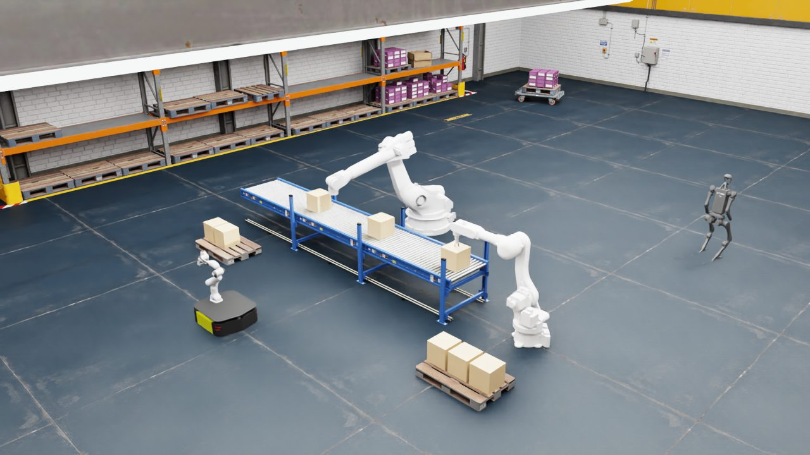
빈 화면에서 시작해 로봇 네 대가 일하는 라인을 직접 만든다
상자 하나를 떨어뜨리는 것부터 시작한다. 공장 바닥을 깔고, CAD 파일로 받은 로봇에 관절을 달고, 로봇을 좌표로 움직이고, 마지막에 RAPID 스타일 프로그램을 ROS 2 노드로 떼어 낸다. 단계마다 직접 돌려 본 코드와 그 실행에서 나온 화면·수치를 붙였다.
학습 지도 열기
완성본부터 돌려 본다
무엇을 만들게 되는지 먼저 본다. 이 저장소의 완성본을 그대로 실행하고, 화면의 각 창이 무엇인지 익힌다.
- PowerShell을 열고 저장소 폴더로 간다.
cd E:\Github\IsaacSimProcess - 완성본을 실행한다. 이 명령 하나가 Isaac Sim과 컨트롤러 노드를 함께 띄운다.
C:\isaacsim-6.2\python.bat factory_line_demo.py터미널에 [MOTION] ros2 | /rapid_controller ...와 [ROS2] started /rapid_controller가 찍히고, 창이 뜬 뒤 바로 재생된다.
처음 한 번만 오래 걸린다
창고·로봇 에셋 약 1 GB를 인터넷에서 받는다. 두 번째부터는 캐시(%LOCALAPPDATA%\ov\cache\hub)를 쓴다.
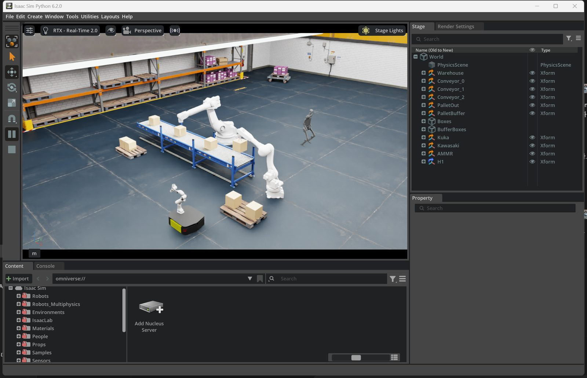
/World/Kuka 같은 경로), 오른쪽 아래 Property는 선택한 물체의 속성, 아래 Content는 파일 브라우저다. 왼쪽 세로 막대의 ▶/❚❚/■가 재생·일시정지·정지다.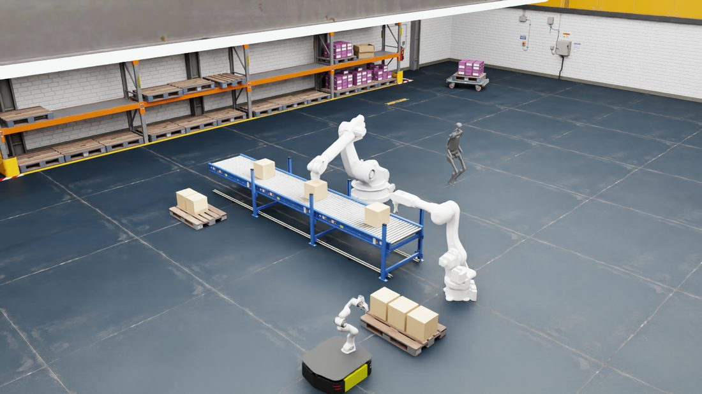
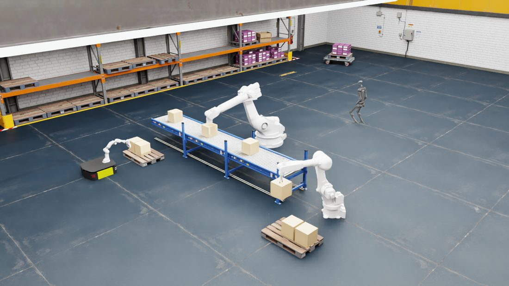
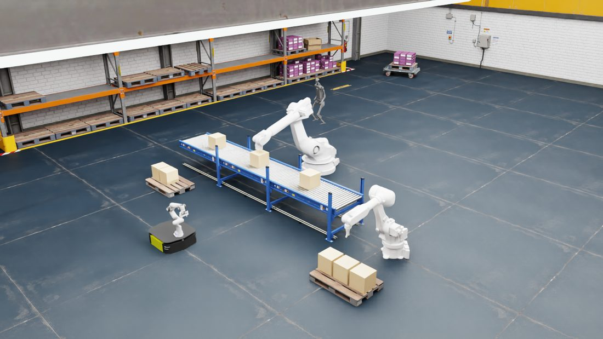
| 로봇 | 하는 일 | 움직이는 방법 (이 학습서의 단계) |
|---|---|---|
| KUKA KR210 L150 | 벨트 위 박스를 같은 속도로 따라가며 검사 | MoveL → 미분 IK (7·8단계) |
| Kawasaki RS080N + RG2 | 벨트 끝에서 박스를 들어 팔레트 3칸에 적재 | MoveL → 미분 IK, SetDO 신호 (8·9단계) |
| AMMR (Ridgeback + Franka) | 두 팔레트 사이를 왕복하며 팔을 뻗음 | MoveBase·MoveAbsJ → 관절 목표 (10단계) |
| Unitree H1 | 라인 옆 통로를 사각형으로 순찰 | MoveBase → 속도 명령 → 내장 보행 정책 (10단계) |
작업 폴더를 만들고 실행 방식을 익힌다
Isaac Sim은 두 가지로 켤 수 있다. 이 학습서는 전부 두 번째인 "파이썬 스크립트가 Isaac Sim을 켜는 방식"을 쓴다.
| 방식 | 명령 | 언제 쓰나 |
|---|---|---|
| GUI 앱 | C:\isaacsim-6.2\isaac-sim.bat | 메뉴로 모델을 가져오고 관절을 손으로 다는 일 (4단계) |
| 스탠드얼론 스크립트 | C:\isaacsim-6.2\python.bat 내파일.py | 장면을 코드로 짜고 로봇을 제어하는 일 (나머지 전부) |
- 학습 폴더를 만든다. 예시는
E:\IsaacLearn이다. - 저장소의
rapid_style.py를 학습 폴더로 복사한다. 7·8단계가 이 파일의robtarget·MoveL을 쓴다. numpy·scipy만 쓰는 파일이라 따로 설치할 것은 없다. - 스크립트는 항상
python.bat으로 실행한다. 이 배치 파일이 Isaac Sim에 들어 있는 Python 3.12와 경로를 잡아 준다. 시스템 Python이나 가상환경으로는isaacsim을 찾지 못한다.
mkdir E:\IsaacLearn
copy E:\Github\IsaacSimProcess\rapid_style.py E:\IsaacLearn\
cd E:\IsaacLearn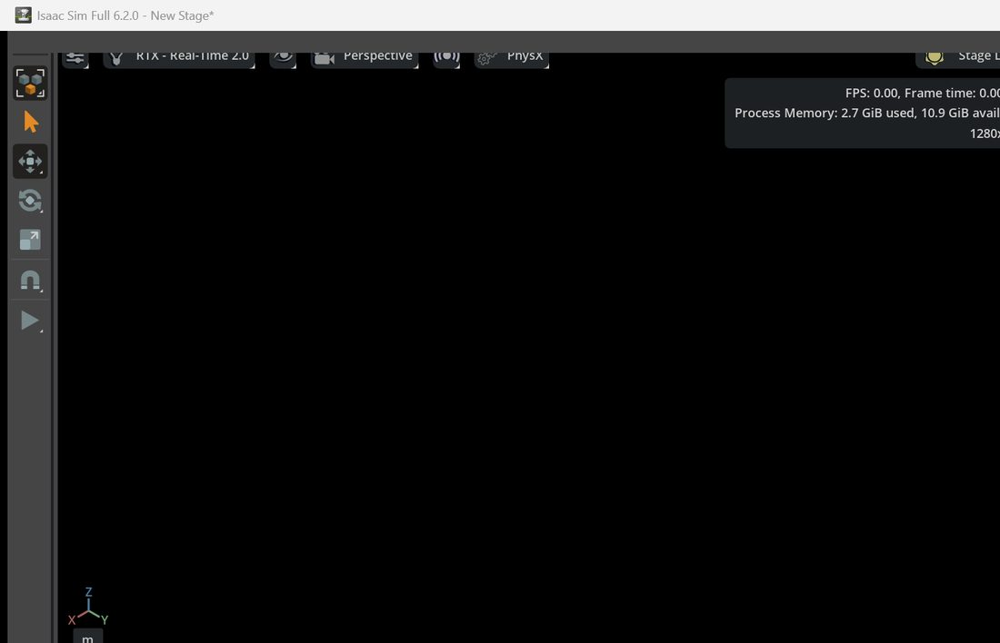
m은 미터다.from isaacsim.core...를 SimulationApp보다 위에 쓰면 모듈을 찾지 못하고 끝난다. 이 학습서의 모든 스크립트가 맨 위에서 앱부터 만드는 이유다.
빈 장면에 물리를 켜고 상자를 떨어뜨린다
장면(Stage)을 만들고, 물리를 켜고, 재생하는 뼈대를 익힌다. 앞으로 모든 단계가 이 뼈대 위에 붙는다.
- 아래 전체 코드를
E:\IsaacLearn\step02_physics.py로 저장한다. - 창을 띄워 실행한다. 상자가 2 m 높이에서 떨어져 바닥에 멈춘다.
C:\isaacsim-6.2\python.bat step02_physics.py핵심 네 가지
- 장면과 프림. 장면 안의 모든 것은
/World/Box같은 경로를 가진 프림이다. GUI의 Stage 창 트리가 이것이다. - 모양 ≠ 물리.
Cube는 모양만 만든다.GeomPrim(..., apply_collision_apis=True)로 충돌체를,RigidPrim으로 강체를 붙여야 중력을 받는다. 바닥은 충돌체만 있어서 움직이지 않는다. - 두 개의 시계. 물리는 0.005 s마다 계산하고, 화면은
simulation_app.update()한 번에 1장 그린다. 화면 간격을RenderingManager.set_dt(8 / 200)(0.04 s)으로 요청했지만, 콜백으로 스텝을 세어 보니 이 PC에서는 update 한 번에 물리 6스텝(0.03 s)이 돌았다. 그래서 시간은 프레임 수가 아니라 스텝 수로 센다. - 재생해야 돈다.
timeline.play()는 GUI의 ▶ 버튼과 같다. 재생 전에는 장면이 멈춰 있다.
상자 높이: 실제 시뮬레이션 vs 자유낙하 계산
점은 이 스크립트를 헤드리스로 돌려 update마다(0.03 s) 찍은 상자 중심 높이, 선은 z = 2.0 − ½·9.81·t² 계산값이다. 상자 한 변이 0.3 m라서 중심이 0.15 m에서 멈춘다.
step02_physics.py 전체 코드
{{code:step02_physics.py}}상자가 떨어져 바닥에 서면 된다. 터미널에 Z 시각 높이 steps 스텝수 줄이 계속 찍힌다. 스텝 수가 6씩 늘면 이 PC와 같다. --frames 45를 주면 시뮬레이션 1.35초 뒤 STEP02 OK로 끝난다.
창고·컨베이어·팔레트로 공장 바닥을 깐다
모델 파일(USD)을 장면에 끼워 넣는 add() 하나로 라인을 짠다. 놓은 뒤에는 높이를 실측한다.
- 2단계 파일에서 바닥·상자 부분을 지우고,
add()함수와 설비 배치를 넣는다. 전체 코드는 아래에 있다. - 실행한다. 처음이면 에셋을 받느라 오래 걸린다.
BBOX줄로 설비 높이가 찍힌다.
{{snippet:step03_scene.py:def add(:add("/Isaac/Props/Pallet/pallet.usd", "/World/PalletBuffer"}}파일 내용을 장면에 복사하지 않고 "이 경로에 저 파일을 끼운다"고만 적는다. 같은 컨베이어 파일을 세 번 놓아도 가볍고 원본은 바뀌지 않는다. 경로(/World/Conveyor_0)는 서로 겹치면 안 된다.
라인 배치도 (위에서 본 모습, 1칸 = 1 m)
좌표는 line_common.py와 스크립트의 실제 값이다. 컨베이어·팔레트 외곽은 3단계 실행에서 잰 바운딩 박스다.
실측값
불러온 모델은 파일마다 크기가 다르다. 그래서 놓고 나서 감싸는 상자(바운딩 박스)로 잰다. 팔레트 윗면 0.143 m는 완성본의 PALLET_TOP과 같다. 컨베이어는 1.166 m가 나오는데, 바운딩 박스가 가장 높은 부품까지 감싸기 때문이다. 박스가 실제로 놓이는 롤러 윗면은 0.77 m(완성본 BELT_Z, 2026-11-12 실측)다. 무엇의 높이를 쟀는지 확인하고 쓴다.
| 프림 | x 범위 [m] | y 범위 [m] | 윗면 z [m] |
|---|
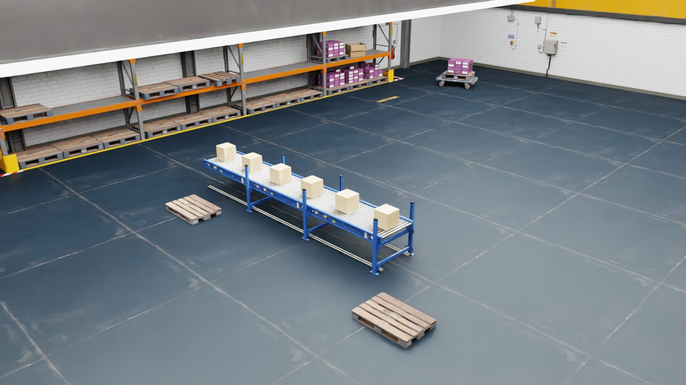
step03_scene.py 전체 코드
{{code:step03_scene.py}}- 충돌체가 없는 소품은 로봇이 그대로 통과한다. 이 컨베이어도 롤러에만 충돌체가 있다.
- mm로 그린 CAD를 그대로 놓으면 1000배로 커진다. 놓은 뒤 반드시 크기를 잰다.
외부 로봇 3D 파일을 움직이는 로봇으로 만든다
ABB에서 받은 GoFa CRB15000 10 kg·1.52 m STEP 파일을 Isaac Sim에서 관절이 있는 로봇으로 만들고, 공장 장면에 놓아 코드로 움직인다. 2026-10-25~26 실습 기록을 그대로 따라간 순서다.
먼저 파일 형식부터 본다
로봇이 움직이려면 네 가지가 필요하다
| 필요한 것 | 어디에 붙이나 | GoFa 실습에서 넣은 값 |
|---|---|---|
| Collider (충돌체) | 링크 아래 Mesh | Convex Hull, Hull Vertex Limit 64 |
| Rigid Body (강체) | 링크의 바깥 Xform (Mesh 아님) | Kinematic 해제, Angular Damping 0.05 |
| Joint + Drive (관절과 구동기) | 부모 링크 → 자식 링크 | Revolute 6개, Angular Drive, 위치 제한 ±90° (실습용 임시값) |
| Fixed Joint + Articulation Root | 월드 → LINK00 (베이스 고정) | Solver Position Iteration 32 |
GUI에서 따라 하기
- CAD Converter 켜기.
isaac-sim.bat으로 앱을 켜고 Window > Extensions에서omni.kit.converter.cad를 검색해 Enabled로 켠다. - 가져오기. File > Import(Open 아님)로 조립체 STEP(
..._ASM_CAD.step)을 고른다. 생긴 루트 Xform의Scale:unitsResolve가 0.001이면 mm가 m로 이미 맞춰진 것이다. 0.001을 또 곱하지 않는다. - 저장. File > Save As로
gofa_rigging.usd를 만든다. 이후 작업은 이 파일에 한다. - 링크마다 (LINK00~06). 바깥 Xform의 Instanceable 체크를 끈다. 하위 Mesh에 우클릭 Add > Physics > Collider, 바깥 Xform에 Add > Physics > Rigid Body.
- 베이스 고정. LINK00을 고르고 Create > Physics > Joint > Fixed Joint. Body0을 비워 두면 월드에 고정된다. 이 FixedJoint에 Add > Physics > Articulation Root.
- 회전 관절. 부모 Xform을 고르고 Ctrl로 자식 Xform을 더 고른 뒤 Create > Physics > Joint > Revolute Joint. 축과 피벗은 아래 표대로 고친다. 관절마다 Add > Physics > Angular Drive.
- 이름 정리. 관절 프림 이름을
joint_1~joint_6으로 바꾼다. 모두RevoluteJoint면 ROS 2 관절 이름이 겹친다.
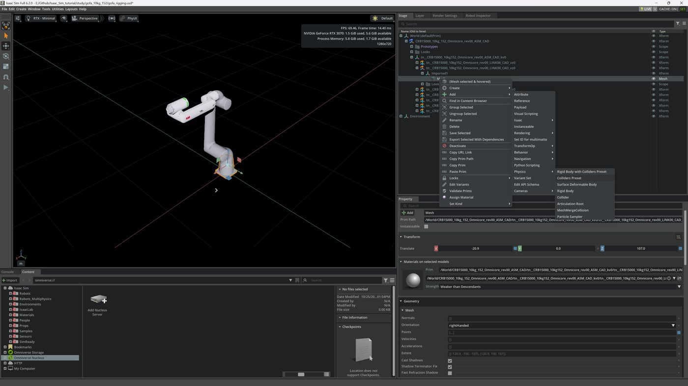
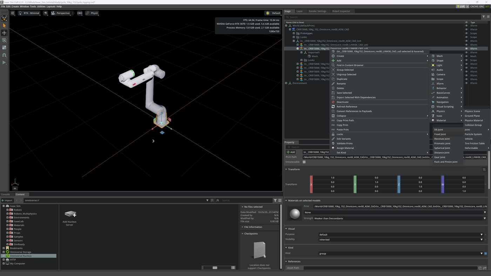
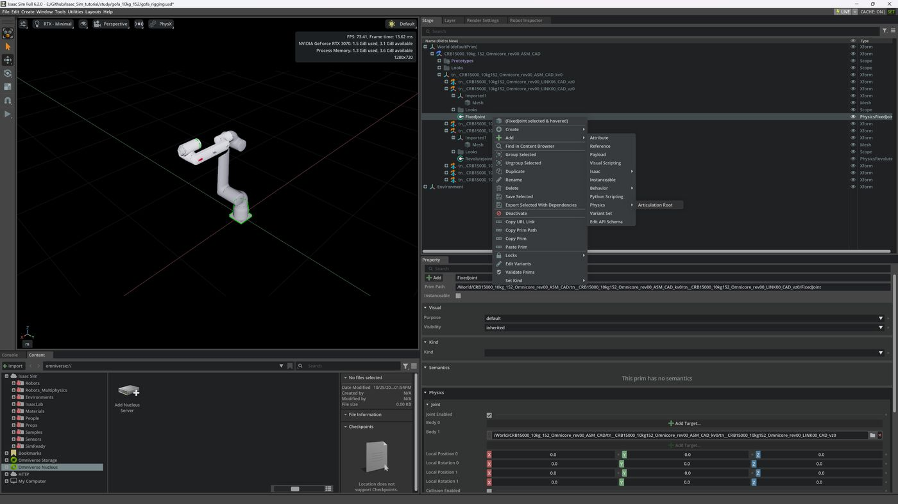
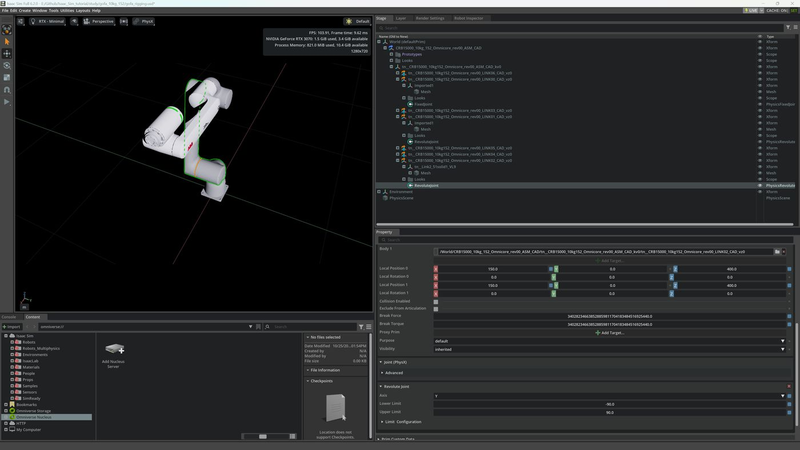
관절 축과 피벗
CAD의 원형 경계(구멍·축받이)를 읽어 회전 중심을 계산했다. 부모 scale 0.001을 그대로 두었으므로 값은 mm다. Local Position 0과 1은 같은 값, Rotation은 0이다.
| 관절 | Body0 → Body1 | Axis | Local Pos 0/1 [mm] |
|---|---|---|---|
| joint_1 | LINK00 → 01 | Z | (0, 0, 0) |
| joint_2 | LINK01 → 02 | Y | (150, 0, 400) |
| joint_3 | LINK02 → 03 | Y | (150, 0, 1107) |
| joint_4 | LINK03 → 04 | X | (246, 0, 1217) |
| joint_5 | LINK04 → 05 | Y | (787, 0, 1217) |
| joint_6 | LINK05 → 06 | X | (855, 0, 1297) |
Drive 값을 정한 방법
acceleration 타입에서 강성 k와 감쇠 c를 고유진동수 ω와 감쇠비 ζ=1로 정했다. k = ω², c = 2ζω. 1축은 ω=5(25/10), 나머지는 ω=10(100/20). Max Force는 링크 무게 × 팔 길이로 추정한 중력 토크 상한이다.
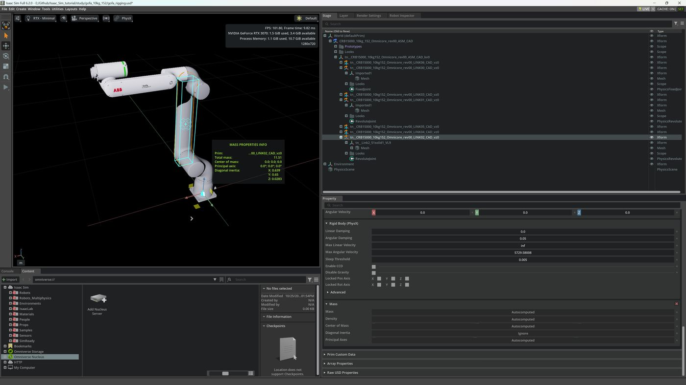
ROS 2로 관절 하나 돌려 보기 (GUI 방식)
- Tools > Robotics > ROS 2 OmniGraphs > Joint States. Articulation Root에 FixedJoint 경로를 넣는다 (Stage에서 Copy Prim Path, 밑줄 두 개 주의).
- 그래프의 topic을
/gofa/joint_states,/gofa/joint_command로 바꾸고 재생한다. - ROS 2 셸에서 명령을 보낸다. position 단위는 rad다.
ros2 topic pub --once /gofa/joint_command sensor_msgs/msg/JointState "{name: [joint_6], position: [0.1745329252]}"
ros2 topic echo /gofa/joint_states --once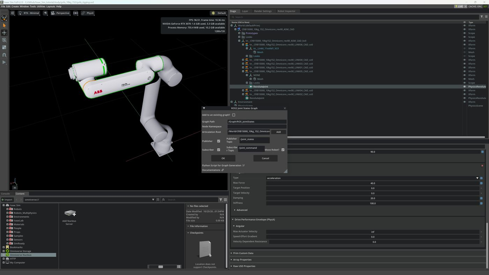
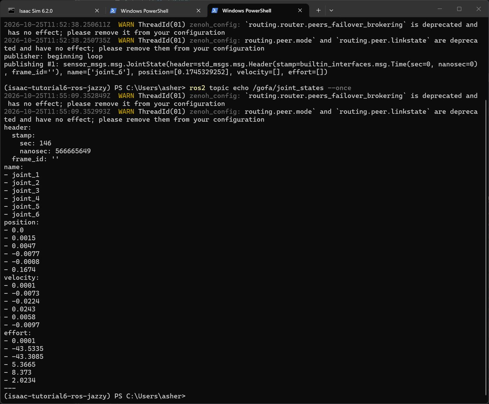
- Play 중에 관절을 만들면 이상한 오프셋이 들어간다. 관절은 Stop 상태에서 만든다.
- ROS 명령을 받아도 Property의 Drive Target Position은 0으로 남는다. 런타임 값만 바뀌기 때문이다.
/joint_states로 확인한다. - URDF 내보내기(File > Export to URDF)가
missing or non-finite joint limits (... velocity)로 실패하면 Joint > Advanced > Maximum Joint Velocity가 inf인 것이다. 1~5축 500, 6축 60 deg/s를 넣었다. - URDF를 다시 가져오니 베이스만 1000배, 색 손실, 3축 흔들림이 생겼다. 원인은 베이스 메시 scale 누락, LINK06 충돌체 없음(질량 음수 경고), LINK02 무게중심이 조립체 좌표로 남은 것이었다.
수리 전후 5초 시험: 관절이 멈추는가
모든 관절 목표 0, 헤드리스, CPU, 1/120 s, 600스텝. 막대는 마지막 1초 동안의 진동 폭 [deg]이다. 수리 전 joint_3은 35.09° 폭으로 흔들렸고, 수리 후에는 모든 관절이 0°다.
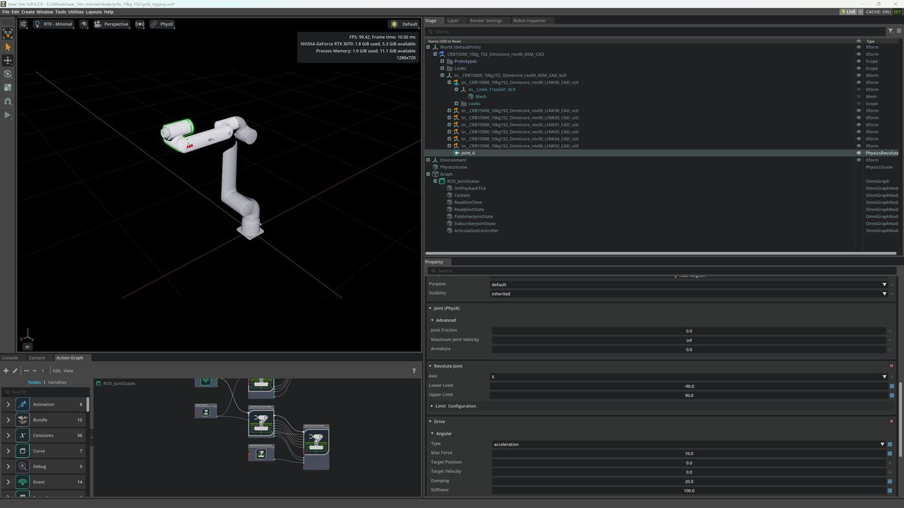
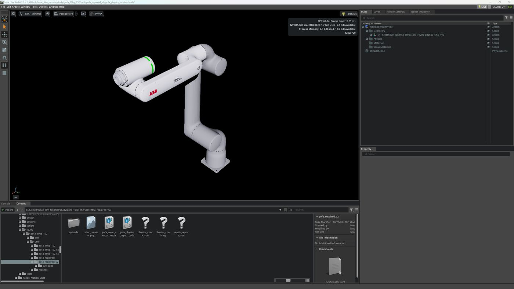
gofa_physics_repaired.usda만든 로봇을 공장 장면에 놓고 코드로 움직이기
여기부터 다시 스크립트다. 내 PC의 파일도 3단계의 add()로 똑같이 놓는다. 다른 점은 Articulation Root가 어디 붙었는지 찾아서 그 경로로 잡는 것 하나다. 이 USD는 URDF를 거쳐 왔기 때문에 루트가 LINK00 프림에 있다.
이 스크립트는 5단계에서 만드는 my_scene.py의 build_scene()과 add()를 가져다 쓴다. 처음 따라 한다면 5단계의 my_scene.py를 먼저 저장하고 돌아온다.
{{snippet:step04_gofa.py:build_scene(simulation_app, with_robots=False):gofa = Articulation(roots[0])}}| 실행에서 찍힌 값 | 내용 |
|---|
GoFa joint_1·joint_2: 목표 vs 실제
joint_1을 ±0.8 rad, joint_2를 ±0.3 rad, 6초 주기로 흔들었다. 리깅에서 넣은 Drive만으로 따라간다. joint_1은 약 0.6 s 늦게 따라온다. 강성 25(ω = 5 rad/s)로 부드럽게 잡은 값이라서다. 빨리 따라가야 하면 강성과 Max Force를 올린다.
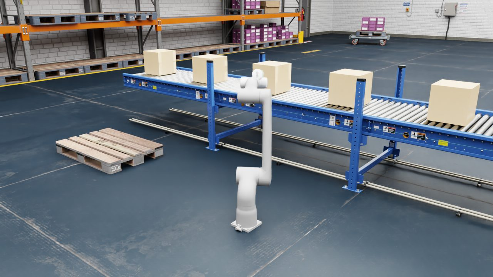
step04_gofa.py 전체 코드
{{code:step04_gofa.py}}로봇 세 대를 놓고 Articulation으로 잡는다
장면 만드는 코드를 my_scene.py로 떼어 내고, KUKA·Kawasaki·AMMR을 놓는다. 그리고 내 로봇을 넣을 때 가장 먼저 하는 일, 관절·링크 이름 확인을 한다.
- 아래
my_scene.py를 저장한다. 3단계 내용에 로봇 세 대가 더해졌다. 6~8단계가 모두 이 파일을 가져다 쓴다. step05_robots.py를 저장하고 실행한다. 터미널에 로봇마다ROBOT,LINKS줄이 찍힌다.
{{snippet:my_scene.py: # (x, y, z)는 [m]: scene["ammr"].set_default_state}}add()는 모양을 장면에 놓기만 한다. 관절을 읽고 목표를 보내려면 Articulation("/World/Kuka")로 잡아야 한다. 이것이 로봇 한 대를 다루는 손잡이다.
| 로봇 | 관절 수 | 관절 이름 (순서대로) |
|---|
손끝 링크는 LINKS 목록에서 고른다. 완성본은 KUKA tool0, Kawasaki gripper_center를 쓴다. 시작 자세는 팔꿈치가 굽은 자세로 정한다. 곧게 편 자세는 IK가 불안정하다.
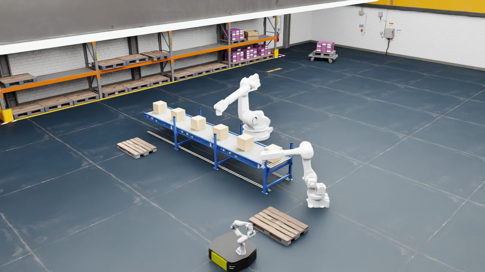
my_scene.py 전체 코드
{{code:my_scene.py}}step05_robots.py 전체 코드
{{code:step05_robots.py}}물리 콜백에서 관절 목표를 보낸다
로봇 제어는 "물리 한 스텝이 끝날 때마다 불리는 함수" 안에서 한다. 그 안에서 관절 목표 각도를 보내 KUKA 1축을 흔든다.
{{snippet:step06_joints.py:def on_physics_step(:callback_id = SimulationManager.register_callback}}- set_dof_position_targets는 순간이동이 아니다. 관절 구동기(PD)가 강성 kp·감쇠 kd에 따라 목표를 따라간다.
- 게인을 직접 정한다. KUKA 에셋 기본 게인(5.7e16)에서는 지령 없이도 a1이 0.13 rad 흘렀다. 완성본은
set_dof_gains(5.73e8, 5.73e6)를 쓴다. - 첫 스텝에서 초기화한다. 재생 직후 한 번
reset_to_default_state()로 시작 자세를 맞춘다. 정지 후 재생할 때도 여기로 온다.
KUKA a1: 지령 vs 실제
a1을 ±0.6 rad, 4초 주기로 흔들었다. 0.05 s마다 기록했다. 게인을 5.73e8로 세게 잡아 지령과 실제의 차이가 최대 0.012 rad다. 4단계 GoFa(강성 25)와 비교해 본다.
step06_joints.py 전체 코드
{{code:step06_joints.py}}관절 대신 공구 끝 좌표로 움직인다
RobotStudio처럼 "TCP를 여기로"라고 말하려면 좌표를 관절각으로 바꿔야 한다. 매 스텝 오차를 조금씩 줄이는 미분 IK로 KUKA TCP가 공중에 원을 그리게 한다.
{{snippet:step07_ik.py:def ik_step(: return float(np.linalg.norm(target_pos - tcp_pos))}}손끝 링크(tool0)의 원점과 실제 공구 끝(TCP)은 다르다. tooldata(x, y, z, rx, ry, rz)가 링크에서 본 TCP의 위치와 방향이다. KUKA tool0은 +X가 공구 방향이라 y축으로 90° 돌려 TCP의 Z축을 맞췄다.
TCP 경로 (위에서 본 x-y)
목표 원(반지름 0.25 m)과 실제 TCP
위치 오차 [mm]
처음 수렴 구간 뒤 오차
IK 결과를 "실제 관절각 + 증분"으로 보내면 PD 구동 때문에 관절 속도가 kp/kd × 증분에 묶여 이동 중 1 m나 뒤처졌다. state["q_cmd"]처럼 지령 관절각을 따로 들고 거기에 더한다. 관절 속도 한계는 원인이 아니었다.
step07_ik.py 전체 코드
{{code:step07_ik.py}}RAPID 스타일 프로그램으로 동작을 적는다
좌표를 매 스텝 계산하는 대신 MoveL p, v500, z100, tool처럼 적는다. rapid_style.py의 RapidTask가 이것을 매 스텝 "지금 TCP가 있어야 할 자세"로 바꿔 준다.
{{snippet:step08_rapid.py:# robtarget은:task = RapidTask(square_program()}}| RAPID | 이 파일 | 다른 점 |
|---|---|---|
MoveL p, v1000, z50, t; | yield MoveL(p, v1000, z50, t) | 길이 m, 속도 m/s. v1000 = 1.0 m/s, z50 = 0.05 m |
[[x,y,z],[q],...] | robtarget(x, y, z, rx, ry, rz) | 방향은 오일러 각 [deg]. rx = 180이 공구가 바닥을 봄 |
WaitUntil di1 = 1; | yield WaitUntil(함수) | 조건은 True/False를 돌려주는 함수 |
SetDO do1, 1; | yield SetDO("do1", 1) | io 딕셔너리에 값을 쓴다 |
yield를 만나면 명령 하나를 내놓고 그 자리에서 멈춘다. RapidTask가 그 명령을 여러 스텝에 걸쳐 끝까지 실행한 뒤 다음 줄을 꺼낸다. RAPID에서 MoveL 한 줄이 끝나야 PP가 다음 줄로 가는 것과 같다.
fine과 z100의 차이 (x-y 경로)
p1·p4는 fine이라 모서리에 정확히 선다. p2·p3은 z100이라 목표 0.1 m 안에 들어오는 순간 다음 목표로 곧장 방향을 튼다. ABB처럼 포물선으로 둥글게 깎지 않아서 모서리를 비스듬히 자른 경로가 된다.
지령 TCP 속도 [m/s]
가속 4 m/s² 안에서 v500(0.5 m/s)까지 오르고, fine 앞에서 0으로 내린다
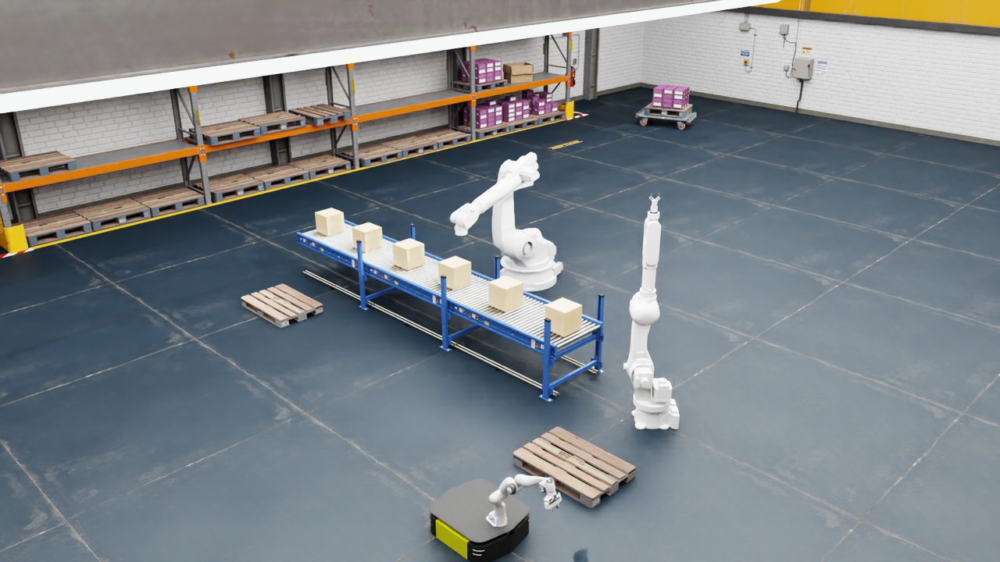
step08_rapid.py 전체 코드
{{code:step08_rapid.py}}박스를 흐르게 하고 센서와 그리퍼 신호로 맞춘다
여기부터는 완성본 코드를 읽으며 따라간다. 박스는 물리가 없는 시각용 큐브이고, 위치를 시각으로 계산한다. 로봇은 디지털 입력(박스 도착)을 기다렸다가 디지털 출력(쥐기)을 켠다.
- 박스 흐름. 박스는 x = −3.7에서 벨트에 올라 0.225 m/s로 흘러 24초 뒤 x = 1.7(집는 점)에 닿는다. 두 값 사이 거리가
3 × TAKT × BELT_V= 5.4 m가 되도록 맞췄다.factory_line_demo.py의box_positions_rapid() - 센서 (DI).
box_at_pick()은 벨트 끝에 박스가 있으면 True. 근접 센서 하나다. - 그리퍼 (DO).
SetDO("doGrip", 1)이 켜지면 기다리던 박스가 TCP를 따라가고, 0이 되면 그 자리에 놓인다. RG2 손가락의 물리 파지는 아니다.
{{repo:rapid_controller.py: slot = 0 # 이번에 놓을: slot = (slot + 1) % 3 # 다음 칸}}Kawasaki 한 택트(8.0 s) 안에서 명령이 차지하는 시간
RapidTask를 실제 추종이 완벽하다고 가정하고 돌려 명령마다 시작·끝 시각을 기록했다. 박스를 놓고 돌아와도 약 2.0 s가 남아 WaitUntil에서 다음 박스를 기다린다.
같은 택트의 TCP 높이와 속도
높이 1.12 m가 박스 윗면(집는 점), 0.493 m가 팔레트 위 박스 윗면(놓는 점)이다. v1500 구간에서 1.5 m/s까지 오른다.
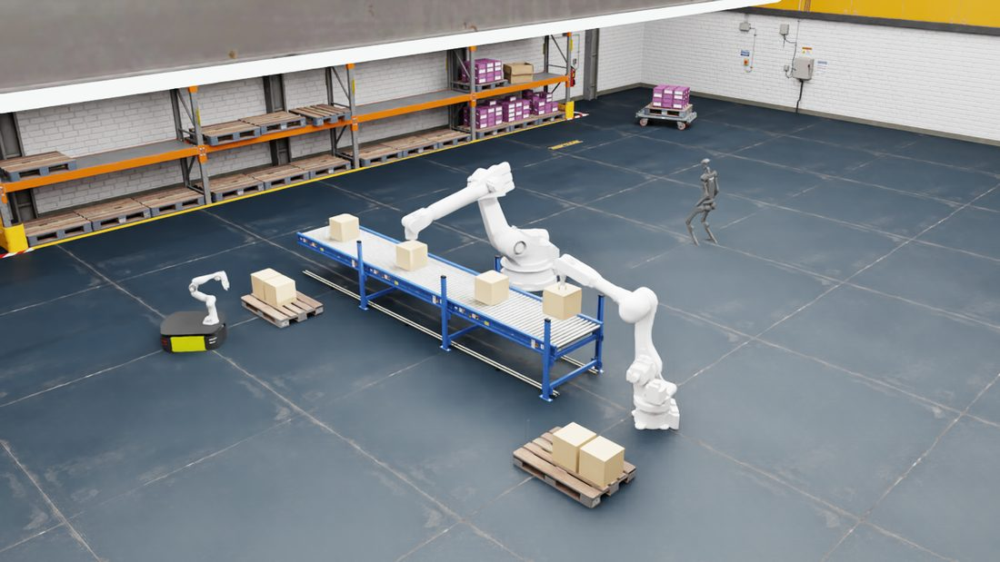
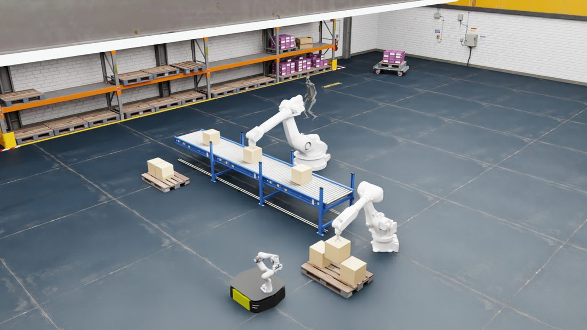
이동 로봇 두 대를 움직인다
팔이 아닌 로봇은 몸 전체를 옮긴다. AMMR은 바퀴 대신 "베이스 가상 관절"로, H1은 학습된 보행 정책으로 움직인다. 둘 다 프로그램에서는 MoveBase 한 줄이다.
- 관절 12개. 0~2가 베이스 [m] x, [m] y, [rad] 방향, 3~9가 팔 7축, 10~11이 손가락.
MoveBase가 베이스 관절 목표를,MoveAbsJ가 팔 목표를 만든다. 둘 다set_dof_position_targets로 보낸다.- 바퀴 속도 제어는 아니다. 처음 놓은 자리(3.2, −3.0)가 베이스 관절 (0, 0)이다.
add()대신RobotPolicyRunner(get_h1_spec(), ...)가 모델·신경망·관절 게인을 한 묶음으로 불러온다.- 매 스텝
h1.step(dt, [전진, 횡, 회전])에 속도 명령만 준다. 관절 19개의 목표는 정책이 계산한다. - 물리 간격을 정책이 학습된 0.005 s(200 Hz)로 맞춘다. 이 데모의 200 Hz가 여기서 왔다.
{{repo:factory_line_demo.py:h1 = RobotPolicyRunner(:RenderingManager.set_dt(8 * h1.physics_dt)}}타임라인을 정지하면 PhysX가 관절 게인을 USD 기본값(kp 5730)으로 되돌린다. 정지할 때 h1.close()를 불러 두면 다음 재생에서 학습 게인(kp 150~200)이 다시 적용된다. 완성본의 frame() 함수가 이 일을 한다.
RAPID 프로그램을 ROS 2 컨트롤러 노드로 떼어 낸다
실제 공장에서는 로봇 프로그램이 로봇 밖(컨트롤러나 외부 PC)에서 돈다. 같은 구조로 프로그램을 별도 프로세스 /rapid_controller로 떼고, 시뮬레이터 /isaac_sim과 topic·service로만 대화하게 한다.
- ROS 2를 따로 설치하지 않는다.
enable_extension("isaacsim.ros2.bridge")가 Isaac Sim 안의 ROS 2 Jazzy 라이브러리를 연다. 그 뒤에import rclpy. - RMW를 FastDDS로 고정한다.
python.bat기본값 Zenoh는 라우터를 따로 켜야 프로세스끼리 찾는다. 두 프로세스 모두RMW_IMPLEMENTATION=rmw_fastrtps_cpp. - 두 노드를 따로 띄워 본다. 컨트롤러만 Ctrl+C로 끄면 로봇은 마지막 자세에서 멈추고, 다시 띄우면 프로그램이 첫 줄부터 이어 간다.
C:\isaacsim-6.2\python.bat factory_line_demo.py --no-controller
C:\isaacsim-6.2\python.bat rapid_controller.py물리 한 스텝(0.005 s)에서 일어나는 일
답을 기다리지 않으면 무슨 일이 생기나 (2026-11-23 실측)
받기 반복이 "메시지가 없으면 바로 멈추게" 고친 뒤 60초를 돌리자 시뮬레이션이 컨트롤러를 앞질렀다. 지령이 평균 114 ms 늦게 적용돼 두 항목이 떨어졌다. /clock에 대한 답을 최대 5 ms 기다리게 고친 뒤 다시 0.0 ms가 됐다.
{{repo:factory_line_demo.py: deadline = time.perf_counter() + 0.005: break}}이 구조는 외부 PC가 매 주기 "지금 있어야 할 자세"를 흘려보내는 방식(ABB EGM, KUKA RSI와 같은 계열)이다. 경로를 로봇 컨트롤러가 계산하는 방식(ABB RWS로 RAPID 실행)으로 바꾸면 MoveL이 목표·진행·결과가 있는 Action이 된다. 현장에서는 후자가 더 흔하고, 비상정지·안전 영역은 항상 로봇 컨트롤러에 남긴다.
물체를 클릭해서 목표 좌표를 찍는다 (티칭)
RobotStudio에서 물체 윗면에 스냅을 걸고 타깃을 찍듯, 실행 중 물체를 클릭하면 그 윗면 가운데가 robtarget 한 줄로 찍힌다. 그 줄을 프로그램에 붙인다.
- 완성본을 실행하고 뷰포트나 Stage 창에서 팔레트를 클릭한다. 움직이는 박스는 일시정지(❚❚)한 뒤 클릭한다.
- 터미널과 Console 탭에 찍힌 줄을
rapid_controller.py의 목표 등록부에 붙인다. 찍힌 자리에는 빨간 표시가 생긴다.
[TEACH] robtarget(3.202, -1.499, 0.143, 180.0, 0.0, 0.0) # /World/PalletOut 윗면 가운데{{repo:factory_line_demo.py:def snap_top(: return robtarget((low[0] + high[0]) / 2}}찍히는 점은 바운딩 박스 윗면 중심이다. 꼭짓점·모서리 스냅은 없다. 컨트롤러 노드는 장면을 볼 수 없으므로 이 함수는 시뮬레이터 쪽에만 있다.
화면 대신 숫자로 확인한다
눈으로는 "대충 잘 움직인다"까지만 보인다. 완성본은 --seconds를 주면 정해진 시간만 돌고 15개 항목을 숫자로 검사한다.
C:\isaacsim-6.2\python.bat factory_line_demo.py --headless --seconds 60한계 대비 사용률 (낮을수록 여유)
"몇 m 미만" 항목만 모았다. 100%를 넘으면 FAIL이다. 회색은 고치기 전 1차 실행에서 떨어진 두 항목이다.
실시간 비율이 바뀐 이력
1.0이면 실제 1초에 시뮬레이션 1초. 조건(시간·다른 작업 부하)이 실행마다 달라 추세만 본다.
- 모든 계산이 고르게 느리면 수치 라이브러리 스레드부터 의심한다.
OMP_NUM_THREADS등 3개를 1로 두자 0.41x → 0.72x가 됐다. - 성능을 손본 뒤에는 PASS 여부만 보지 말고 지령 지연(mean age)도 본다. 40초 실행은 통과하고 60초에서야 떨어진 사례가 있다.
- 컨트롤러 자식 프로세스는 stdin 파이프로 묶여 있어 Ctrl+C·강제 종료에도 따라 끝난다. 그래도 남은
kit.exe가 있으면 작업 관리자에서 끈다.
내 로봇과 내 라인으로 바꾸는 순서
- 도면 숫자.
line_common.py의 배치 값(TAKT,BELT_V, 팔레트 좌표)을 내 셀 값으로 고친다. 두 노드가 같이 읽는다. - 모델. 4단계 방식으로 내 로봇 USD를 만들고
add("E:/.../my_robot.usd", "/World/MyRobot", ...)로 놓는다. 놓은 뒤 크기·높이를 잰다. - 손잡이.
Articulation으로 잡고 관절·링크 이름을 출력해 손끝 링크와 굽은 시작 자세를 정한다. - 공구.
TOOLS에 내 tooldata를 이름과 함께 넣는다. 지령 메시지에는 이 이름이 실려 간다. - 통신. 시뮬레이터 물리 콜백에 상태 발행 하나·지령 적용 하나를, 컨트롤러에 구독 하나·발행 하나·프로그램 하나를 더한다.
- 점검. 자체 점검에 "목표를 따라가는가"와 "넘어지지 않는가"를 내 로봇 기준으로 추가하고 60초 이상 돌린다.
- 2~8단계 스크립트(4단계 GoFa 포함)는 2026-11-23 이 PC에서 헤드리스로 실행했고, 그래프의 수치는 그 실행 로그다.
- 4단계의 GUI 리깅 순서는 2026-10-25~26 실습 기록에서 왔다. GUI 조작을 이번에 다시 하지는 않았다.
- 9~13단계는 완성본 코드와 그 실행 결과를 읽는 단계다. 별도 단계 스크립트는 없다.
- 박스는 물리가 없는 시각용이고, 로봇끼리 충돌 회피는 없다. 실제 로봇으로 시험하지 않았다.